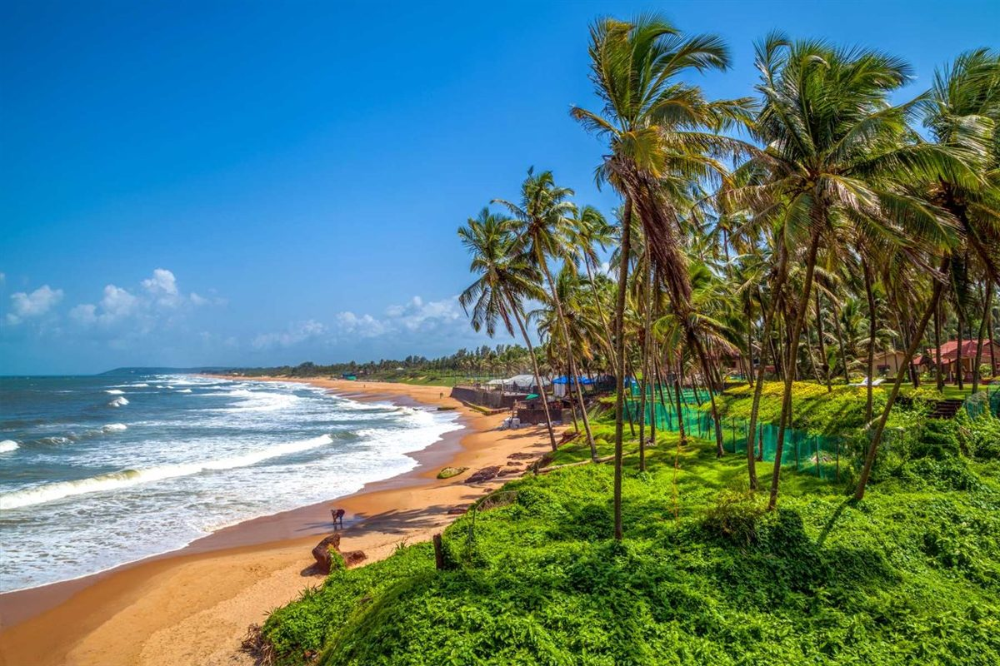
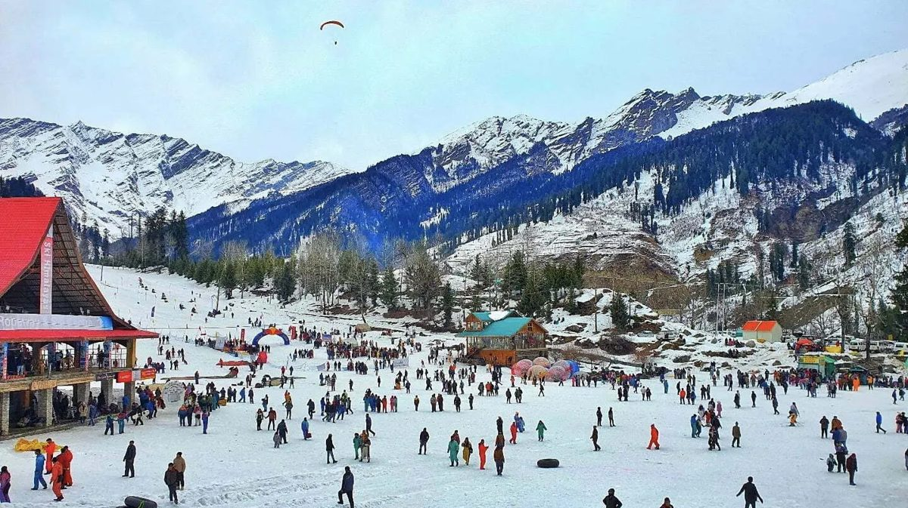
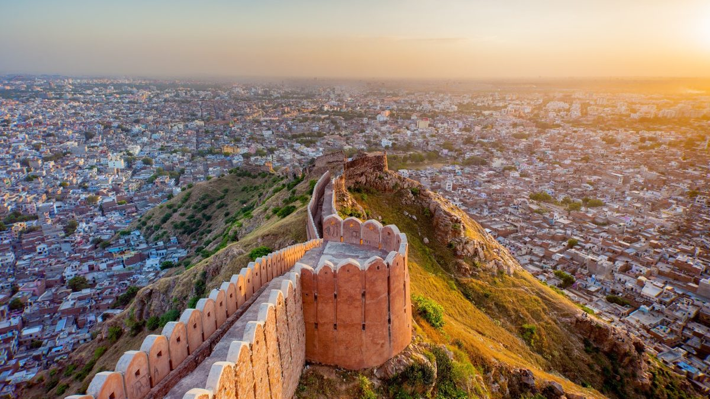

Three places worth the trip: a beach, a mountain valley and a royal
city.

A Goa beach lined with palm trees
Goa
Goa is India's smallest state and its most relaxed. North Goa buzzes
with beach shacks, flea markets and parties, while South Goa is quiet,
with long empty beaches. Between swims, wander the Portuguese-era lanes
of Fontainhas and the old churches of Old Goa.
Best time
November to February, when the weather is dry and cool.
How to reach
Fly to Dabolim or Mopa airport, or take a train to Madgaon or Thivim.
Stay
Beach huts and hostels from about Rs 1,500 a night; resorts from Rs
5,000.
Must do
Sunset at Chapora Fort, a Mandovi river cruise, fish thali at a local
shack.
Tip
Rent a scooter to get around, and carry your licence and a helmet.

Snow and paragliding at Solang Valley, Manali
Manali
Set in Himachal Pradesh's Kullu valley, Manali is the gateway to snow,
rivers and high mountain passes. Summers bring paragliding, rafting on
the Beas and treks through pine forests. Winters turn the valley white
and open the way to Solang Valley for skiing and snow play.
Best time
March to June for pleasant weather; December to February for snow.
How to reach
Nearest airport is Bhuntar (about 50 km); most people take an
overnight bus from Delhi or Chandigarh.
Stay
Homestays from Rs 1,200 a night; hotels around Mall Road from Rs
3,000.
Must do
Solang Valley, Hadimba Temple, and Old Manali's cafes.
Tip
Check road and weather updates before heading to Rohtang or Atal
Tunnel, and carry warm clothes even in summer.

Jaipur at sunset from the walls of Nahargarh Fort
Jaipur
The Pink City is Rajasthan's capital and a living museum of forts,
palaces and bazaars. Climb Amber Fort at sunrise, explore the City
Palace and Hawa Mahal, then shop for block prints, jewellery and blue
pottery in Johari Bazaar. Dinner is dal baati churma, best eaten with
plenty of ghee.
Best time
October to March; summers are very hot.
How to reach
Jaipur has its own airport and railway junction, and is about 4.5
hours from Delhi by road.
Stay
Hostels from Rs 700; heritage havelis from Rs 4,000 a night.
Must do
Amber Fort, Hawa Mahal, Jantar Mantar and an evening at Nahargarh
Fort.
Tip
Buy the composite ticket for several monuments, and bargain politely
in the bazaars.